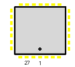

|
|
8.2.7 TT DP8530 HighRes. Oszillator
Atari TT HighRes. Oszillator
TT Serie DP 8530 28 Pin SMD HighRes. Oszillator (TT only)
Pin Signal Typ Beschreibung _______________________________________________________________________________ 1 PCLK2- Output ECL- 2 PCLK2 Output ECL+ 23 PCLK1 3 Vcc3 Output 4 Vcc2 Output 18 Vcc1 21 Vcc0 5 VCO1 7 VCO2 6 Vee 8 LE1 9 LE2 10 CPO 11 OPAMP 12 L2 13 XTALB Takt 14 XTLC 15 S1 16 S0 17 XOUT 19 GND1 20 GND0 22 GND2 24 LCLK0 25 LCKL1 27 LCLK2- 28 LCLK2 26 ENIN _____________________________________________________________________________
 Abbildung 1 - DP 8530 HighRes. SMD Oszillator
|
|
|